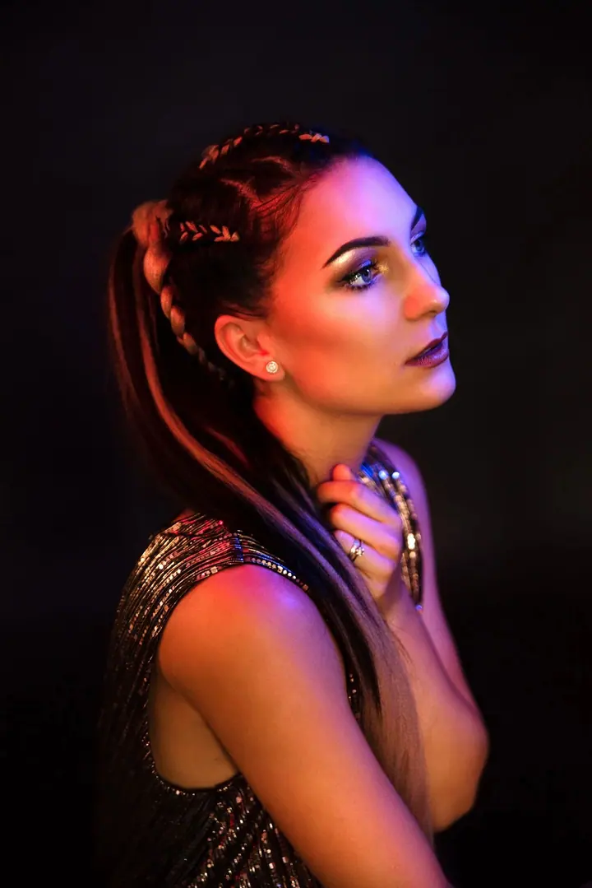
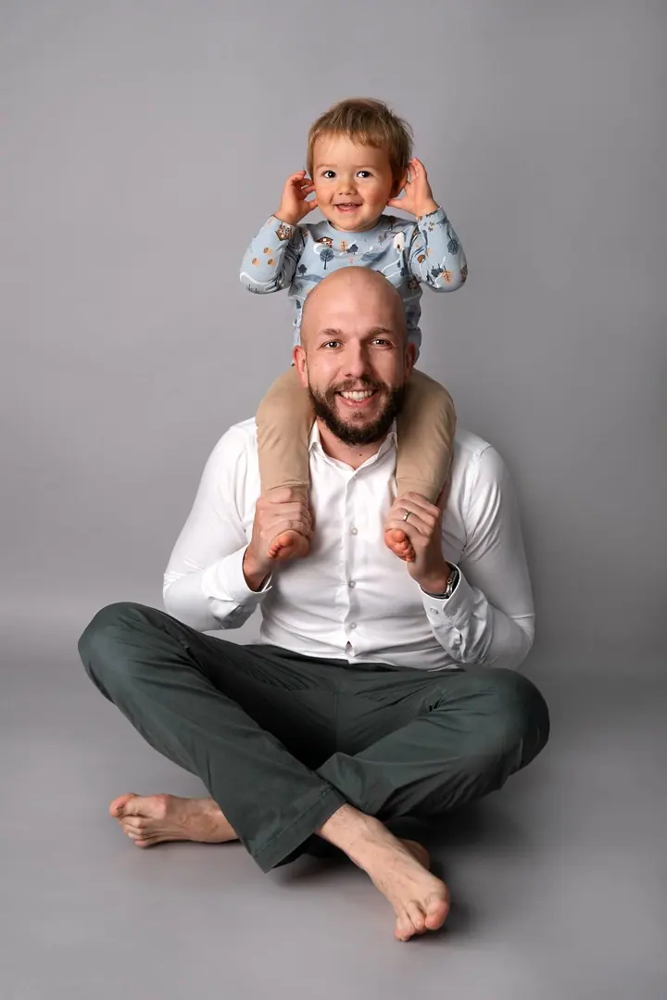
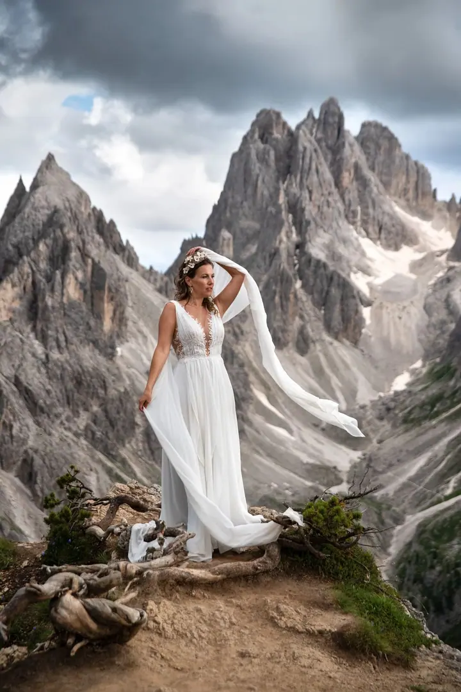
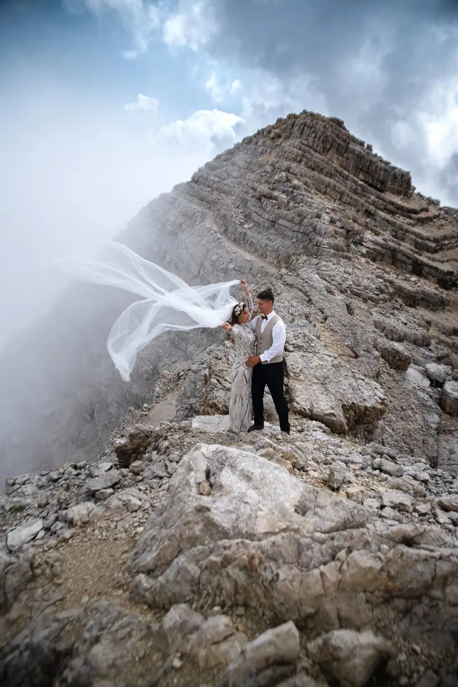
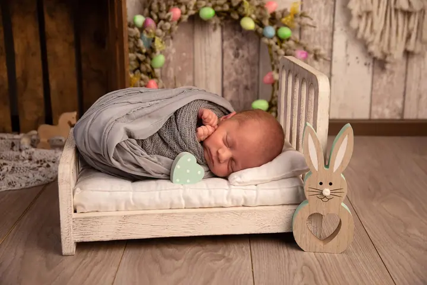
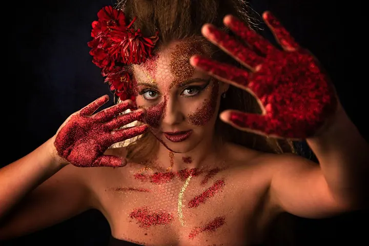

Portréty a profilovky
Prostor, kde můžete na chvíli zpomalit a nechat vyniknout svůj výraz, gesto a energii. Fotím osobní portréty i profesionální fotky pro práci, v ateliéru nebo venku.





Jmenuji se Alena Horňáková a v Boršicích nedaleko Uherského Hradiště mám vlastní fotoateliér. Fotím portréty, rodiny, děti, těhotenské i newborn focení, ve studiu i venku v celém regionu. Pomohu vám s pózováním, aby fotky vypadaly přirozeně a cítili jste se při focení dobře.
Více o mně
„Pomohu Vám s pózováním, aby Vaše fotky vypadaly přirozeně a příjemně.“
— Alena Horňáková
Prostor, kde můžete na chvíli zpomalit a nechat vyniknout svůj výraz, gesto a energii. Fotím osobní portréty i profesionální fotky pro práci, v ateliéru nebo venku.
Jemné focení novorozenců v klidném ateliéru, kde se vše přizpůsobuje miminku. Vystřídáme tři i více zákoutí s rekvizitami, beze spěchu a s důrazem na bezpečí.
Uvolněné focení v ateliéru nebo v přírodě v okolí Uherského Hradiště. Nechávám prostor pro hru a spontánní chvíle, děti nemusí pózovat.
V jemném ateliérovém světle nebo v parku, na louce či u vody. Chci, abyste se cítila krásně, pohodlně a sama sebou, partner i děti jsou vítaní.
Jsem portrétní fotografka a fotím už deset let. Zkušenosti mám i z produktového focení pro firemní e-shop Baťa, které mi rozšířilo obzory v práci s vizuálním obsahem. Dnes se nejvíc věnuji lidem: portrétům, rodinám, dětem, maminkám v očekávání a novorozencům.
Můj ateliér najdete v Boršicích, jen pár minut od Uherského Hradiště. Je tu přípravná místnost se zrcadlem, zázemí pro přebalování a krmení a pro děti i miminka mám nachystané plno rekvizit. Ráda ale fotím i venku, v parku, na louce nebo u vody.
Většina lidí za mnou přichází s tím, že neumí stát před foťákem. Nevadí. Ukážu vám jednoduché pózy, během focení vám na displeji ukážu pár povedených snímků a vybrané fotky pak pečlivě retušuji, aby na první pohled vynikla vaše krása.
Napíšete mi, o jaké focení máte zájem a jaký termín vám vyhovuje. Fotím i o víkendu a krátce si popovídáme o vašich představách.
V ateliéru nebo venku nastavím světlo tak, aby vám to co nejvíc slušelo. S pózováním vám pomůžu a průběžně vám ukazuji fotky na displeji.
Do jednoho až dvou dnů vám pošlu odkaz na soukromé album s náhledy. Při výběru se vám automaticky počítá cena, takže máte stále přehled.
Vybrané fotky pečlivě vyretušuji a do dvou týdnů od výběru vám pošlu odkaz ke stažení v plné kvalitě i ve zmenšené verzi.
Nemusíte. Ukážu vám jednoduché pózy, pracuji s detaily, které vám sluší, a společně kontrolujeme fotky na displeji.
Nejlépe funguje jednoduché jednobarevné oblečení bez nápisů a velkých potisků. Klidně si přineste víc variant a před focením společně vybereme. Můžete mi poslat i fotku outfitů předem.
Dětské, rodinné a těhotenské focení zpravidla nanejvýš hodinu, portréty až dvě hodiny a newborn focení dvě až tři hodiny, podle tempa miminka.
Ano, vyretušované fotky dostanete ke stažení v plné kvalitě i ve zmenšené verzi. Originály bez úprav neposkytuji. Nabízím také fotoobrazy na plátně, hliníku nebo akrylátovém skle.